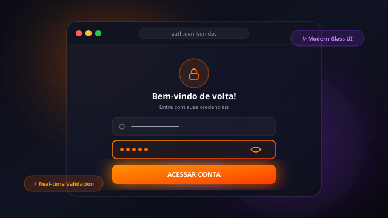

Online
Tela de Login Moderna
Interface de autenticação frameless com motion design, campos com rótulos flutuantes (floating labels), alternância de visibilidade de senha, login social e validação em tempo real.